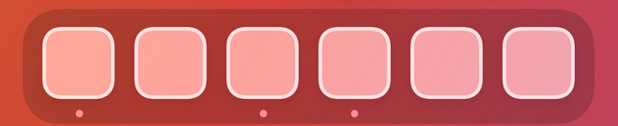
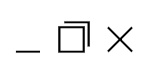
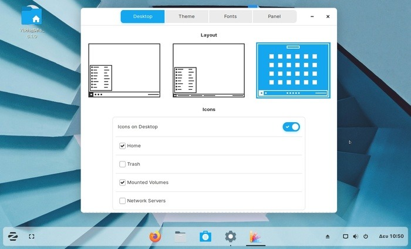

Nu is het tijd om zelf op te zoeken wat de css-properties display en position doen.
Belangrijk
Zelfstandig nieuwe zaken opzoeken is een waardevolle vaardigheid in webdesign, omdat de technologieën en best practices voortdurend evolueren. Door deze proactieve leerhouding ontwikkel je de flexibiliteit om in te spelen op veranderingen en innovaties naar de toekomst toe.
Oefening 1: Voorbeelden
Display
Maak een website waarin je uitlegt wat deze display-properties doen, voorzie ook duidelijke voorbeelden (voorbeelden gemaakt met code, geen afbeeldingen):
- Block
- Inline-block
- Inline
- None
Position
Maak een nieuwe pagina waarin je uitlegt wat deze position-properties doen, voorzie ook duidelijke voorbeelden (voorbeelden gemaakt met code, geen afbeeldingen):
- Absolute
- Fixed
- Relative
- Static
Oefening 2: Desktop environment
Mac style dock
Maak een nieuwe website met onderaan een dock.
Het dock heeft de volgende elementen: icoontjes, background, border en bolletjes.

Menu bar
Geef je desktop environment een menu bar bovenaan en een wallpaper.

Window
Geef je desktop environment een window.
Het windows heeft icoontjes voor maximize, minimize en close.
Op Windows zien deze er zo uit, maar je mag zelf een design kiezen.

De inhoud van het window mag je zelf kiezen.
